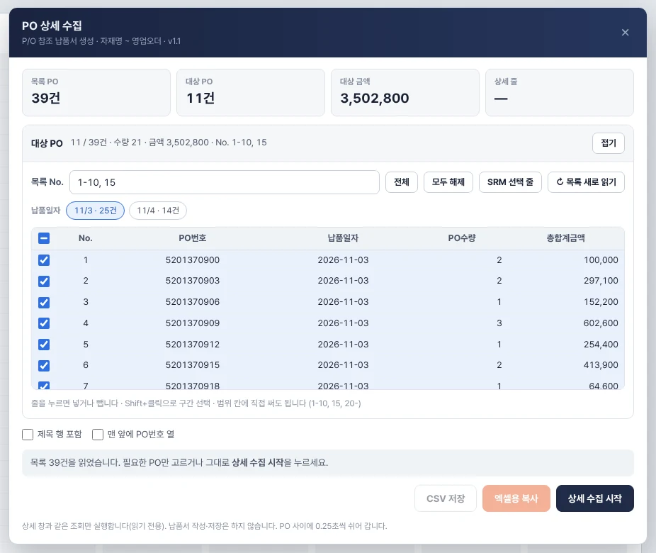
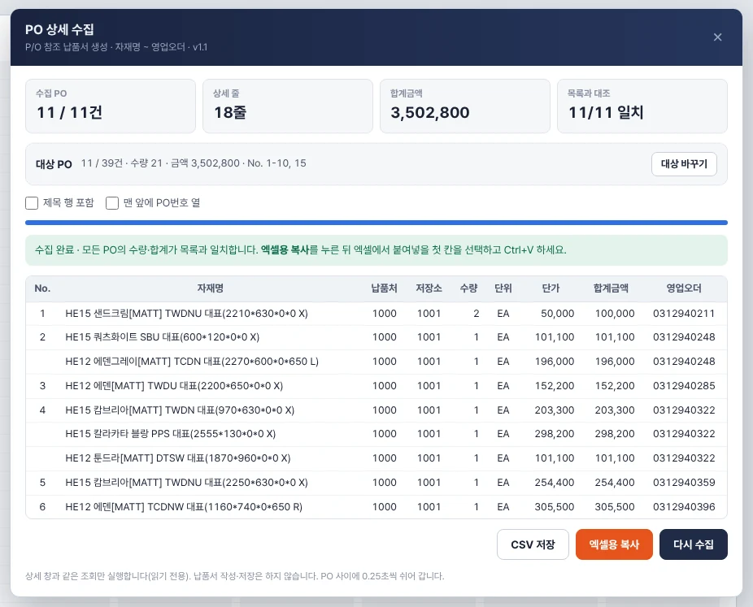
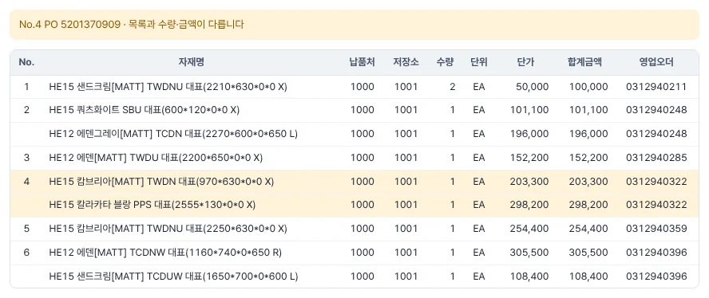

USER MANUAL · v1.1
PO 상세수집
- 기준 버전v1.1
- 기준일2026-10-29
- 브라우저크롬
- 필요한샘 SRM 로그인
한샘 SRM P/O 참조 납품서 생성 목록의 PO를 하나씩 더블클릭해 상세 창의 자재명~영업오더를 복사하던 일을, 버튼 한 번으로 모아 엑셀에 붙여넣는 크롬 북마크 도구입니다. 처음 쓰는 분은 2장 설치와 3장 빠른 순서만 따라 하면 됩니다.
CHAPTER 01
무엇을 하는 도구인가요
1.1 하는 일
| 구분 | 내용 |
|---|---|
| 대상 화면 | 한샘 SRM · P/O 참조 납품서 생성 (화면 코드 SRM000403L) |
| 하는 일 | 조회된 목록에서 고른 PO마다 상세 창과 같은 내용을 차례로 읽어 한 표로 모음 |
| 결과 | 자재명 · 납품처 · 저장소 · 수량 · 단위 · 단가 · 합계금액 · 영업오더 (8열) |
| 내보내기 | 엑셀용 복사(클립보드) 또는 CSV 저장 |
| 확인 | PO마다 상세의 수량 합·금액 합을 목록의 PO수량·총합계금액과 대조 |
목록 40건 안팎이면 15초쯤 걸립니다. 한 PO에 품목이 여러 개면 품목마다 한 줄이 되고, 목록 순서와 PO 안의 품목 순서는 SRM 그대로입니다.
1.2 하지 않는 일
- 납품서 작성·저장·삭제·승인 같은 버튼은 누르지 않습니다. SRM 데이터를 바꾸지 않습니다.
- 로그인하지 않습니다. 사용자가 SRM에 로그인해 화면을 연 상태에서만 동작합니다.
- 모은 내용을 어디에도 보내거나 저장하지 않습니다. 복사하거나 CSV로 내려받기 전까지는 수집 창 안에만 있고, 창을 닫거나 새로고침하면 사라집니다.
- SRM 검색 조건(발주일자·납품처 등)을 바꾸거나 조회 버튼을 대신 누르지 않습니다. 조회는 SRM 화면에서 직접 합니다.
1.3 어떻게 동작하나요
SRM 목록을 더블클릭하면 상세 창이 열리면서 SRM이 그 PO의 상세 내용을 서버에 조회합니다. PO 상세수집은 창을 여는 대신 이 같은 조회를 PO마다 차례로 실행하고, 결과를 수집 창의 표에 모읍니다. 서버에 부담을 주지 않도록 PO 사이에 0.25초씩 쉬어 갑니다.
수집 창은 SRM 페이지 위에 떠 있는 작은 창입니다. 북마크를 누를 때마다 그 페이지에서 새로 실행되며, 설치되는 프로그램은 없습니다.
CHAPTER 02
설치
2.1 북마크바에 끌어 놓기
크롬에서 Ctrl+Shift+B를 눌러 북마크바를 보이게 합니다.
아래 주황 PO 상세수집 단추를 마우스로 끌어서 북마크바에 놓습니다. 누르는 것이 아니라 끌어 놓는 것입니다.
북마크바에 PO 상세수집이 생기면 설치가 끝납니다.
이 매뉴얼은 크롬 기준입니다. 단추를 북마크바에 놓은 PC에서만 쓸 수 있으므로 다른 PC에서는 같은 방법으로 한 번 더 설치합니다.
주황 단추를 마우스로 끌어서 크롬 북마크바에 놓으면 설치가 끝납니다. 이 페이지에서 단추를 눌러도 실행되지 않습니다. 북마크바가 안 보이면 Ctrl+Shift+B.
2.2 끌어 놓기가 안 될 때 (직접 설치)
위 그림 아래쪽의 코드 복사를 누릅니다.
크롬 북마크바의 빈 곳을 오른쪽 클릭하고 페이지 추가를 고릅니다.
이름에
PO 상세수집을 적고, URL 칸을 비운 뒤 Ctrl+V로 붙여넣고 저장합니다.
주의
복사한 코드는 javascript:로 시작하는 긴 글자입니다. 앞부분이 잘리거나 빠지면 동작하지 않습니다. 메신저로 보내면 주소가 바뀔 수 있으니, 다른 사람에게는 이 매뉴얼 주소를 알려 주세요.
2.3 새 버전으로 바꾸기
북마크바의 기존 PO 상세수집을 오른쪽 클릭해 삭제합니다.
이 매뉴얼의 단추를 다시 북마크바로 끌어 놓습니다.
SRM에서 북마크를 눌러 수집 창 제목 아래의 버전(v1.1)을 확인합니다.
CHAPTER 03
빠른 사용 순서
한샘 SRM에 로그인하고 P/O 참조 납품서 생성 화면을 엽니다.
평소처럼 조건을 넣고 조회합니다.
북마크바의 PO 상세수집을 누릅니다. 화면 오른쪽 위에 수집 창이 뜹니다.
대상 PO를 고릅니다. 처음에는 목록 전체가 골라져 있습니다(4장).
상세 수집 시작을 누르고 끝날 때까지 기다립니다.
안내 칸이 초록색으로 수집 완료인지, 목록과 대조가 모두 일치인지 확인합니다.
엑셀용 복사를 누릅니다.
엑셀에서 자재명이 들어갈 첫 칸을 고르고 Ctrl+V로 붙여넣습니다.
수집 창을 닫으려면 오른쪽 위 ×를 누르거나 북마크를 한 번 더 누릅니다. 창 머리 부분을 끌면 위치를 옮길 수 있습니다.
CHAPTER 04
대상 PO 고르기

- 1숫자 칸목록 PO 수 · 고른 대상 PO 수 · 고른 PO의 총합계금액. 수집이 끝나면 결과 숫자로 바뀝니다.
- 2대상 요약고른 건수 · 수량 · 금액 · 고른 No. 범위. 접기로 목록을 감출 수 있습니다.
- 3목록 No. 범위1-10, 15처럼 쉼표와 - 로 적습니다. 비워 두면 전체. 체크 목록과 서로 맞춰집니다.
- 4전체 · 모두 해제목록 전체를 고르거나 모두 뺍니다.
- 5SRM 선택 줄SRM 목록에서 클릭해 둔 줄을 대상으로 가져옵니다.
- 6목록 새로 읽기SRM에서 다시 조회했다면 눌러 목록을 새로 읽습니다.
- 7납품일자 단추목록에 납품일자가 둘 이상일 때만 보입니다. 누르면 그 날짜만, Ctrl+클릭은 날짜를 더합니다.
- 8체크 목록줄을 누르면 넣거나 뺍니다. Shift+클릭은 구간 선택. 맨 위 칸은 전체 선택/해제.
- 9붙여넣기 옵션제목 행 · PO번호 열. 일일기록정리 판매현황 자료로 쓸 때는 둘 다 끕니다.
- 10상세 수집 시작고른 PO의 상세를 차례로 읽습니다. 수집 중에는 멈추기로 바뀝니다.
수집 창의 대상 PO 칸에서 어떤 PO를 모을지 정합니다. 네 가지 방법은 서로 맞춰지므로 섞어 써도 됩니다. 범위 칸에 적으면 체크 목록이 바뀌고, 체크 목록을 바꾸면 범위 칸 글자도 바뀝니다.
4.1 범위 칸에 적기
목록 No. 칸에 SRM 목록의 번호(No.)를 적습니다.
| 적는 법 | 뜻 |
|---|---|
| (비워 둠) | 목록 전체 |
1-10 |
1번부터 10번까지 |
1-5, 8, 12-14 |
1~5번, 8번, 12~14번 |
20- |
20번부터 끝까지 |
9~6 |
6~9번 (~도 되고, 거꾸로 적어도 됨) |
번호가 목록 범위를 벗어나거나 알아볼 수 없는 글자가 있으면 칸이 빨갛게 바뀌고 안내가 나옵니다. 알아볼 수 있는 번호만 고르고 나머지는 뺍니다. Enter를 누르면 칸에서 빠져나와 정리된 표기로 바뀝니다.
이 체험은 스크립트가 켜진 브라우저에서 동작합니다.
4.2 체크 목록에서 고르기
목록에는 No.·PO번호·납품일자·PO수량·총합계금액이 SRM과 같은 순서로 나옵니다.
- 줄을 누르면 넣거나 뺍니다(체크 칸을 정확히 누르지 않아도 됩니다).
- 한 줄을 누른 뒤 다른 줄을
Shift+클릭하면 그 사이를 한 번에 넣거나 뺍니다. - 맨 위 체크 칸은 전체 선택/해제입니다. 일부만 골랐으면
−모양으로 보입니다. - 전체, 모두 해제 단추도 있습니다.
4.3 납품일자로 고르기
목록에 납품일자가 둘 이상이면 납품일자 단추가 생깁니다(예: 11/3 · 25건). 누르면 그 날짜의 PO만 고릅니다. Ctrl+클릭하면 지금 고른 것에 그 날짜를 더하거나 뺍니다. 그 날짜가 모두 골라져 있으면 파란 단추, 일부만이면 연한 파란 테두리로 보입니다.
4.4 SRM 목록에서 클릭해 둔 줄 가져오기
SRM 목록에서 필요한 줄을 클릭합니다. 여러 줄은
Ctrl+클릭이나Shift+클릭으로 고릅니다.수집 창의 SRM 선택 줄을 누릅니다.
참고
SRM 목록이 한 줄 선택만 허용하는 설정이면 한 줄만 잡힙니다. 그럴 때는 범위 칸이나 체크 목록으로 고르세요.
4.5 SRM에서 다시 조회했을 때
수집 창은 열 때의 목록을 기억합니다. 수집 창을 연 채로 SRM에서 조건을 바꿔 다시 조회했다면 ↻ 목록 새로 읽기를 눌러 목록을 새로 읽고 대상을 다시 고릅니다.
목록이 바뀐 것을 모른 채 수집을 시작하면, 엉뚱한 PO를 모으지 않도록 시작 전에 멈추고 안내합니다. 수집 도중에 바뀌어도 그 자리에서 멈춥니다.
CHAPTER 05
수집과 대조
5.1 수집하는 동안
상세 수집 시작을 누르면 대상 목록이 접히고 진행 막대와 3 / 11 · No.3 PO … 상세를 읽는 중 같은 안내가 나옵니다. 그동안 대상 고르기 단추는 잠깁니다.
- 중간에 그만두려면 멈추기를 누릅니다. 지금까지 모은 PO만 결과에 남습니다.
- 한 PO가 20초 안에 응답하지 않으면 그 PO를 건너뛰고 안내에 적은 뒤 다음 PO로 넘어갑니다.
- 수집하는 동안 SRM 화면에서 다른 작업(다시 조회, 다른 메뉴 이동)은 하지 않습니다.

- 1수집 PO모은 PO 수 / 고른 PO 수.
- 2목록과 대조PO마다 상세의 수량 합·금액 합을 목록의 PO수량·총합계금액과 비교한 결과.
- 3대상 바꾸기수집하면 대상 목록이 접힙니다. 눌러 펼치고 다시 고를 수 있습니다.
- 4안내완료 · 멈춤 · 다른 점이 있으면 여기에 적힙니다.
- 5미리보기복사될 표. 왼쪽 No.는 목록 번호(PO 첫 줄에만), 가는 선은 PO 구분. 복사에는 No.가 들어가지 않습니다.
- 6엑셀용 복사엑셀에서 붙여넣을 첫 칸을 고르고 Ctrl+V. 숫자 서식과 영업오더 앞 0이 유지됩니다.
- 7CSV 저장같은 내용을 PO상세_날짜_시각.csv로 내려받습니다(제목 행 포함).
- 8다시 수집같은 대상을 다시 모읍니다.
5.2 목록과 대조
PO마다 상세 줄의 수량 합과 합계금액 합을 SRM 목록의 PO수량·총합계금액과 비교합니다.
| 결과 | 표시 | 할 일 |
|---|---|---|
| 모두 일치 | 초록 안내 수집 완료 · 모든 PO의 수량·합계가 목록과 일치합니다 |
그대로 복사 |
| 수량이나 금액이 다름 | 노란 안내 No.4 PO … · 목록과 수량·금액이 다릅니다, 그 PO 줄이 노랗게 |
SRM에서 그 PO를 직접 열어 확인 |
| 상세 내용이 없음 | 노란 안내 … 상세 내용이 없습니다 |
SRM에서 그 PO를 직접 열어 확인 |
| 응답 없음·오류 | 노란 안내에 PO와 이유 | 다시 수집하거나 직접 확인 |
위쪽 숫자 칸의 목록과 대조에 11/11 일치처럼 일치한 PO 수가 나옵니다. 노란 줄도 복사에는 들어가므로, 확인 전에는 그대로 쓰지 않습니다.

- 1다른 점 안내몇 번째 PO에서 수량·금액 중 무엇이 다른지 적습니다.
- 2노란 줄그 PO의 상세 줄. SRM에서 이 PO를 직접 열어 확인하세요.
CHAPTER 06
엑셀에 붙여넣기
6.1 엑셀용 복사
수집이 끝나면 엑셀용 복사를 누릅니다. 안내 칸에
113줄 복사 완료처럼 나옵니다.엑셀에서 자재명이 들어갈 첫 칸을 고릅니다.
Ctrl+V로 붙여넣습니다.
| 열 | 붙여넣어지는 값 | 서식 |
|---|---|---|
| 자재명 | HE15 샌드크림[MATT] TWDNU 대표(2210*630*0*0 X) |
글자 |
| 납품처 · 저장소 | 1000 · 1001 |
글자 |
| 수량 | 1 |
숫자 |
| 단위 | EA (뒤 공백 정리) |
글자 |
| 단가 · 합계금액 | 195200 |
숫자 · 천 단위 쉼표 |
| 영업오더 | 0080070612 |
글자 · 앞 0 유지 |
주의
엑셀에서 선택하여 붙여넣기 → 텍스트나 값만 붙여넣기를 쓰면 서식이 빠져 영업오더 앞의 0이 사라질 수 있습니다. 그냥 Ctrl+V로 붙여넣으세요.
구글 스프레드시트에도 같은 방법으로 붙여넣을 수 있습니다.
6.2 붙여넣기 옵션
| 옵션 | 켜면 | 기본 |
|---|---|---|
| 제목 행 포함 | 맨 위에 자재명 … 영업오더 제목 줄 추가 |
끔 |
| 맨 앞에 PO번호 열 | 자재명 앞에 PO번호 열 추가(9열) | 끔 |
옵션은 복사할 때 적용됩니다. 수집을 다시 하지 않아도 옵션을 바꾸고 엑셀용 복사를 다시 누르면 됩니다. PO번호 열을 켜면 미리보기 표에도 바로 나타납니다.
6.3 CSV 저장
CSV 저장은 같은 내용을 PO상세_20261029_1430.csv처럼 날짜·시각 이름의 파일로 내려받습니다. CSV에는 제목 행이 항상 들어가며, 엑셀에서 열 때 한글이 깨지지 않도록 저장합니다.
참고
CSV를 엑셀에서 그냥 열면 영업오더 앞의 0이 숫자로 바뀌어 사라질 수 있습니다. 영업오더가 필요한 작업에는 엑셀용 복사를 쓰세요.
CHAPTER 07
일일기록정리 판매현황 자료로 쓰기
PO 상세수집의 8열 순서는 일일기록정리 판매현황 추가 자료의 A:H(자재명·납품처·저장소·수량·단위·단가·합계·오더번호)와 같습니다.
수집 창의 제목 행 포함과 맨 앞에 PO번호 열을 끈 상태로 엑셀용 복사를 누릅니다.
엑셀 새 통합 문서의 첫 시트 A1에 붙여넣습니다.
.xlsx로 저장합니다.일일기록정리 판매현황 탭의 자료 불러오기에서 이 파일을 고릅니다.
주의
제목 행을 켜면 H열 제목이 영업오더라서 일일기록정리가 제목으로 알아보지 못하고 읽기를 멈춥니다. 켰다면 엑셀에서 1행을 지우고 저장하세요. CSV 파일은 일일기록정리에서 고를 수 없습니다.
영업오더 앞의 0은 일일기록정리가 오더번호를 비교할 때 알아서 정리합니다. 수량은 일일기록정리 재단정보의 수량 반복에도 쓰입니다.
CHAPTER 08
안전과 한계
8.1 안심하고 써도 되는 이유
- 상세 창이 열릴 때 SRM이 하는 조회 한 가지만 실행합니다. 저장·생성·삭제 요청은 보내지 않습니다.
- 로그인 정보를 읽거나 적지 않습니다. 이미 로그인한 SRM 화면 안에서 SRM과 같은 방식으로 조회합니다.
- 모은 내용은 브라우저 화면 안에만 있습니다. 회사 밖 어느 곳으로도 보내지 않습니다.
- 조회를 위해 SRM 화면 안에 임시 자료 칸 두 개를 만들었다가 수집이 끝나면 지웁니다. 남아 있더라도 새로고침하면 사라지며 SRM 데이터와는 관계없습니다.
8.2 알아 둘 한계
- P/O 참조 납품서 생성 화면 전용입니다. 다른 화면에서 누르면 안내만 나옵니다.
- 한샘이 SRM 화면 구조나 조회 방식을 바꾸면 동작하지 않을 수 있습니다. 그때는 안내 문구를 캡처해 담당자에게 전달하세요.
- 크롬에서 확인했습니다. 회사 PC 보안 설정이 북마크 실행을 막으면 쓸 수 없습니다.
- SRM 목록에 표시된 PO만 대상입니다. 목록의 페이지·조회 조건 밖의 PO는 SRM에서 먼저 조회해야 합니다.
CHAPTER 09
문제 해결
Q. 수집 창에 "P/O 참조 납품서 생성 화면을 열고 조회한 뒤 다시 실행하세요"가 떠요.
다른 화면에서 눌렀거나 아직 조회하지 않은 경우입니다. P/O 참조 납품서 생성 화면을 열고 조회한 뒤, 수집 창을 닫고 북마크를 다시 누르세요.
Q. "목록이 비어 있습니다"가 떠요.
조회 결과가 없는 상태입니다. SRM에서 조건을 확인해 다시 조회한 뒤 ↻ 목록 새로 읽기를 누르세요.
Q. "SRM 목록이 바뀌었습니다"가 떠요.
수집 창을 연 뒤 SRM에서 다시 조회한 경우입니다. ↻ 목록 새로 읽기를 누르고 대상을 다시 고른 뒤 수집하세요.
Q. 노란 줄이 생겼어요.
그 PO의 상세 합계가 목록의 PO수량·총합계금액과 다릅니다. SRM에서 그 PO를 더블클릭해 상세 창과 비교하세요. 다시 수집해도 같다면 SRM 자료 자체를 확인해야 합니다.
Q. 붙여넣었더니 영업오더 앞의 0이 사라졌어요.
값만 붙여넣기나 텍스트로 붙여넣기를 쓴 경우입니다. 엑셀용 복사를 다시 누르고 엑셀에서 그냥 Ctrl+V로 붙여넣으세요. CSV를 엑셀로 연 경우에도 0이 사라질 수 있습니다.
Q. SRM 선택 줄을 눌렀는데 한 줄만 잡혀요.
SRM 목록이 한 줄 선택만 허용하는 설정일 수 있습니다. 범위 칸이나 체크 목록으로 고르세요.
Q. 북마크를 눌러도 아무 반응이 없어요.
직접 설치하면서 코드가 잘렸을 수 있습니다. 기존 북마크를 지우고 2.1의 끌어 놓기로 다시 설치하세요. 그래도 안 되면 회사 보안 설정으로 북마크 실행이 막혔을 수 있습니다.
Q. 수집 창이 SRM 화면을 가려요.
창 머리(남색 부분)를 끌어 옮기거나, 대상 PO의 접기로 목록을 감추세요. 다 쓴 뒤에는 ×로 닫습니다.
Q. 수집 창을 닫았더니 결과가 사라졌어요.
수집 결과는 창 안에만 있습니다. 북마크를 다시 눌러 다시 수집하세요. 오래 보관할 내용은 엑셀에 붙여넣어 저장하거나 CSV로 내려받습니다.
CHAPTER 10
변경 이력
| 버전 | 날짜 | 내용 |
|---|---|---|
| v1.1 | 2026-10-29 | 대상 PO 고르기 추가: 범위 입력(1-5, 8, 12-20) · 체크 목록과 Shift 구간 선택 · 납품일자 단추 · SRM 선택 줄 가져오기 · 목록 새로 읽기. 목록이 바뀌면 시작 전·도중에 멈춤 |
| v1.0 | 2026-10-29 | 첫 버전. 목록 전체 상세 수집, 목록과 대조, 엑셀용 복사(숫자 서식·영업오더 앞 0 유지), CSV 저장 |
PO 상세수집 사용 설명서 · 기준 버전 v1.1 · 정리 2026-10-29 · 주식회사 아이칸 사내용